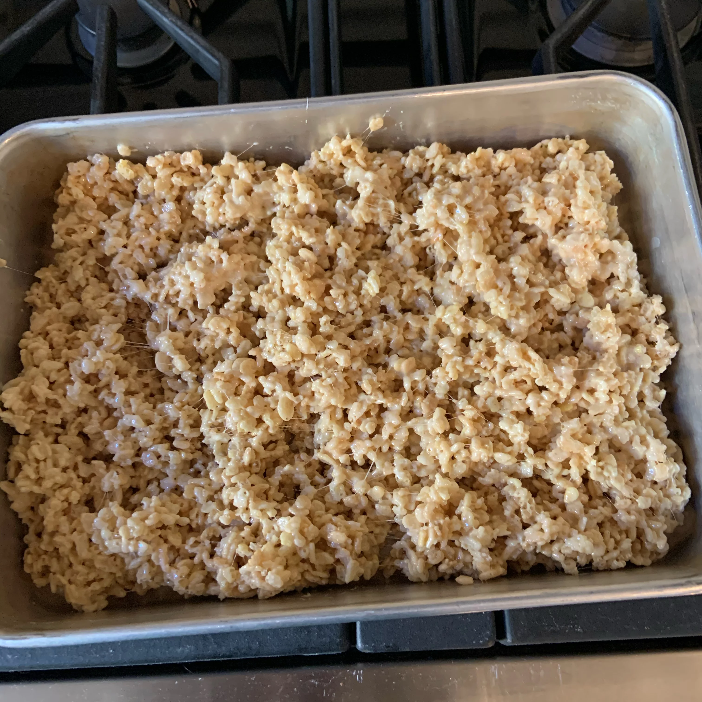

Rice Crispy Treats

You'll love these Gooey Rice Crispy Treats
The best Rice Krispies® treats you'll ever eat! The flavor enhanced by a few additions turns these into a crowd-pleaser.
Ingredients
- ½ cup butter
- 1 (16 ounce) package miniature marshmallows
- 2 tablespoons bourbon
- 1 teaspoon sea salt
- 8 cups crispy rice cereal (such as Rice Krispies®)
- pinch flaked sea salt (such as Maldon®)
Steps
- Melt butter in a saucepan over medium heat, stirring constantly, until golden brown and has a nutty aroma, about 5 minutes. Add marshmallows to browned butter, reduce heat to medium-low, and cook, stirring occasionally, until marshmallows are melted, 3 to 4 minutes.
- Stir bourbon and 1 teaspoon sea salt into marshmallow mixture and remove saucepan from heat. Add rice cereal to marshmallow mixture and mix until cereal is evenly coated with marshmallow mixture; transfer to a 9x13-inch baking dish.
- Place a sheet of parchment paper over rice cereal mixture and press into dish. Remove parchment paper and sprinkle flaked sea salt over the top. Cool treats to room temperature, at least 30 minutes.